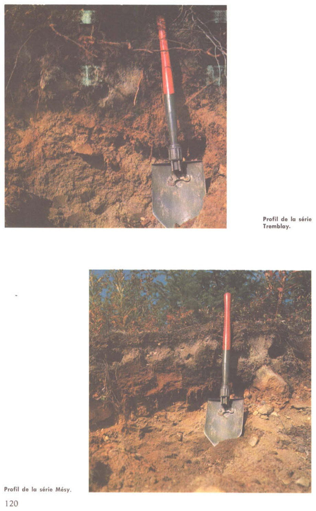

Identification & Caractéristiques Générales
La série Mésy se développe sur un matériau parental constitué de till morainique basal ou ablatif, caractérisé par un dépôt meuble dont la profondeur varie de modérée à superficielle. Ce matériau est fréquemment mis en place sous forme de placages recouvrant le socle rocheux ou les formations de transition dans les secteurs de basses terres et de piémonts de la région du Saguenay–Lac-Saint-Jean et de Charlevoix. La topographie associée à cette série comprend des zones de pentes faibles à sub-horizontales ainsi que des positions de bas de pente, où la configuration du relief influence directement la dynamique de redistribution des eaux de surface et hypodermiques.
Le profil pédologique présente une texture à granulométrie grossière à modérément grossière, se situant généralement à la limite du loam sableux et du sable loameux, avec une présence notable de cailloux, de pierres et de blocs erratiques disséminés dans la matrice meuble ainsi qu'en surface. Le régime hydrique de la série Mésy se traduit par un drainage naturel variant d'imparfait à mauvais, conditionné par la présence d'une nappe phréatique temporaire perchée ou par des horizons moins perméables en profondeur. La réaction du sol est généralement acide et le profil montre un développement morphologique typique des sols sous influence podzolique ou gleyique selon la position topographique et le degré d'engorgement en eau.
Les aptitudes agronomiques de la série Mésy sont limitées par la pierrosité prononcée en surface et dans le profil, qui restreint l'utilisation des machinery agricoles et augmente les coûts de mise en valeur, ainsi que par une fertilité intrinsèque relativement faible. Ces sols se prêtent occasionnellement aux cultures générales de la ferme ou aux prairies permanentes, bien qu'une proportion importante de ces superficies soit marginale pour l'agriculture intensive et doive préférentiellement être maintenue en couvert forestier ou vouée au pâturage. Les principaux aménagements requis pour accroître la rentabilité des parcelles cultivées incluent l'épierrement mécanique rigoureux, l'installation d'un réseau de drainage souterrain adéquat pour corriger l'excès d'eau, ainsi que des apports réguliers d'amendements calciques pour neutraliser l'acidité et optimiser le pH.
Caractères Distinctifs & Morphologie Génétique (Comté de Chicoutimi — Page 94)
- Topographie : en pente
- Drainage : imparfait à mauvais
- Grand-groupe génétique : podzol
- Degré d'érosion : ravinement assez fréquent (E1-E2)
- Classe d'utilisation : 6 (4)
Classification Taxonomique & Environnement Pédologique
| Ordre Pédologique | Podzolique |
|---|---|
| Grand Groupe (SCSS) | Podzol humo-ferrique |
| Sous-Groupe Taxonomique | Podzol humo-ferrique gleyifié |
| Famille Pédologique | Loameuse-grossière, mixte sableux, neutre |
| Mode de Dépôt Parental | Morainique |
| Classe de Drainage Naturel | Imparfaitement drainé |
| Régime Thermique & Humidité | Frais / Perhumide |
Description Morphologique du Profil Type
Séquences génétiques des horizons pédologiques caractérisant le profil type représentatif de la série Mésy :
Profil forestier / boisé — Comté de Charlevoix
✓ Source : Comté de Charlevoix — Page 27Couleur Munsell : Non précisée
Structure & Consistance : Polyédrique à granulaire
Description morphologique : Matière organique non-décomposée (feuilles de résineux et feuillus) et matière organique bien décomposée, noire; racines très abondantes; extrêmement acide.
Couleur Munsell : 10YR 6/3
Structure & Consistance : Polyédrique à granulaire
Description morphologique : Sable loameux; brun pâle (10 YR 6/3 h); particulaire; meuble; limite abrupte, ondulée; extrêmement acide.
Profil forestier / boisé — Comté de Charlevoix
✓ Source : Comté de Charlevoix — Page 28Couleur Munsell : 10R 2/2
Structure & Consistance : Polyédrique à granulaire
Description morphologique : Sable loameux; rouge très sombre (10 R 2/2 h); mar- brures peu nombreuses, petites, faibles; granulaire, fine; très friable; présence de cailloux anguleux et de graviers; limite abrupte, ondulée; très fortement acide.
Couleur Munsell : 10YR 5/6
Structure & Consistance : Polyédrique à granulaire
Description morphologique : Sable loameux; brun-jaune (10 YR 5/6-5/8 h); marbru- res assez nombreuses, moyennes, distinctes; parti- culaire; meuble; cailloux anguleux et graviers abon- dants; limite distincte, ondulée; très fortement acide.
Couleur Munsell : 5Y 5/4
Structure & Consistance : Polyédrique à granulaire
Description morphologique : Sable loameux; olive clair (2,5 Y 5/4-5/6 h); marbru- res nombreuses, petites, faibles; massive; très ferme; présence de cailloux anguleux et graviers; fortement acide.
Profil représentatif — Pédologie de la région du Lac-Sa
✓ Source : Pédologie de la région du Lac-Sa — Page 121Couleur Munsell : 10YR 3/2
Structure & Consistance : Polyédrique à granulaire
Description morphologique : Loam sableux brun-gris très foncé (10YR 3/2); matière organique; pH: 5.4.
Couleur Munsell : 10YR 7/2
Structure & Consistance : Polyédrique à granulaire
Description morphologique : Sable loameux gris clair (10YR 7/2); pH: 5.0.
Couleur Munsell : 7.5YR 5/6
Structure & Consistance : Polyédrique à granulaire
Description morphologique : Loam sableux brun vif (7.5YR 5/6); concrétionné; horizon irrégulier en épaisseur et en intensité de couleur; till caillouteux; pH: 5.3.
Couleur Munsell : 10YR 5/4
Structure & Consistance : Polyédrique à granulaire
Description morphologique : Loam sableux, gravelo-caillouteux, brun-jaune (10YR 5/4); plus compact que B 1 avec dissémination de cailloux de toutes tailles; pH: 5.5.
Couleur Munsell : 10YR 4/2
Structure & Consistance : Polyédrique à granulaire
Description morphologique : Loam sableux gravelo-caillouteux brun-gris foncé (10YR 4/2); pH: 6.7.
Profils Photographiques & Planches de Terrain
Documents iconographiques, figures pédologiques et coupes de terrain documentées dans les mémoires d'inventaire pour de la série Mésy :

Propriétés Physico-Chimiques & Analyses de Laboratoire
| Horizon | Prof. (pces/cm) | Sable % | Limon % | Argile % | pH | C % | N % | Ca éch. | Mg éch. | K éch. | H+ éch. | Bases tot. | C.E.C. (meq/100g) | Saturation % | |||||||||||
|---|---|---|---|---|---|---|---|---|---|---|---|---|---|---|---|---|---|---|---|---|---|---|---|---|---|
| L-H | 8-0 | matière organique | 3,7 | 3,3 | 38,18 | 1,02 | 0,12 | 0,10 | 0,03 | 0,11 | 15,80 | 4,36 | 0,40 | 0,11 | 96,0 | 116,67 | 18,0 | 19 | 1434 | ||||||
| Ae | 0-5 | 14,0 | 22,0 | 29,0 | 15,0 | 80,0 | 13,0 | 7,0 | 3,8 | 3,5 | 0,58 | 0,04 | 0,11 | 0,01 | 0,02 | 0,01 | 0,25 | 0,09 | 0,02 | 0,01 | 2,5 | 2,87 | 13,0 | 28 | 269 |
| Bhgj | 5-13 | 21,0 | 23,0 | 18,0 | 16,0 | 78,0 | 15,0 | 7,0 | 4,6 | 4,2 | 10,01 | 0,35 | 1,33 | 1,70 | 0,88 | 0,18 | 0,00 | 0,08 | 0,05 | 0,01 | 26,0 | 26,14 | 0,5 | 95 | 1838 |
| Bfgj | 13-28 | 18,0 | 16,0 | 25,0 | 19,0 | 78,0 | 17,0 | 5,0 | 5,0 | 4,5 | 1,64 | 0,08 | 0,65 | 0,65 | 0,14 | 0,71 | 0,00 | 0,06 | 0,02 | 0,01 | 5,09 | 2 | 106 | 1838 | |
| Cxg | 28+ | 16,0 | 18,0 | 25,0 | 24,0 | 83,0 | 10,0 | 7,0 | 5,2 | 4,7 | 0,54 | 0,05 | 0,36 | 0,21 | 0,04 | 0,22 | 0,00 | 0,04 | 0,02 | 0,01 | 2,0 | 2,07 | 3 | 134 | 1479 |
Particularités Régionales, Phases & Variantes Pédologiques
Déclinaisons régionales, faciès texturaux, phases d'érosion ou de pierrosité et variantes cartographiées par étude pour de la série Mésy :
| Étude Régionale | Symbole | Appellation / Phase / Variante | Différenciation avec la série type (Analyse pédologique) |
|---|---|---|---|
| Comté de Charlevoix | Me |
Mésy loam sableux caillouteux | Modalité modale de référence (type de base de la série). |
| Comté de Chicoutimi | Me |
Mésy loam sableux caillouteux | Conforme à la série type de référence (caractéristiques texturales et drainage identiques). |
| Pédologie de la région du Lac-Saint-Jean | Me |
Mésy loam sableux caillouteux | Conforme à la série type de référence (caractéristiques texturales et drainage identiques). |
Distribution Pédo-Paysagère & Représentativité Cartographique (Couverture PPS 2026)
- Tremblay loam sableux caillouteux (TMY) — co-occurrente dans 515 polygone(s)
- Dequen terrain (DQU) — co-occurrente dans 267 polygone(s)
- Affleurements rocheux (ARR) — co-occurrente dans 181 polygone(s)
Aptitudes Agronomiques, Hydropédologie & Conservation des Sols
Indicateurs Hydropédologiques & Vulnérabilité à l'Érosion (BDHP 2026)
Interprétation BDHP : Potentiel de ruissellement modérément élevé. Faible taux d'infiltration, présence d'horizons ralentissant le drainage descendant.
Classement selon l'Inventaire des Terres du Canada (ITC / CLI) : Classe 2w.
- Potentiel agricole : Terroir adapté aux cultures régionales selon la texture dominante et la régie de drainage.
- Contraintes majeures : Imparfaitement drainé. Risque d'engorgement temporaire ou d'excès d'eau printanier.
- Gestion & Aménagement : Drainage souterrain ou superficiel préconisé sur les terres planes. Chaulage et apport organique régulier selon les bilans agronomiques.
- Cultures adaptées : Grandes cultures (maïs, soya, céréales), prairies fourragères et cultures maraîchères selon le contexte géomorphologique.